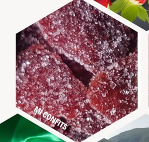

Nos fraises mi-confits
Nos fraises mi-confits sont élaborées à partir des fraises estivales certifiées AB de la ferme. Celles-ci sont soigneusement cueillies et choisies pour leurs qualités gustatives.
Les fraises mi-confits révèlent toutes les saveurs de nos fruits du verger : sucrées, fondantes et pétillantes !
Nos boîtes en fer blanc sont fabriquées en Allemagne.
De taille moyenne, 3 cm de haut et 7,6 cm de diamètre, elles feront un joli cadeau artisanal et original pour les fêtes.
Boîte blanche ou rouge : 6,5 €
Frais de port en sus, nous contacter pour les déterminer.
Ingrédients : Fraises, Sucre